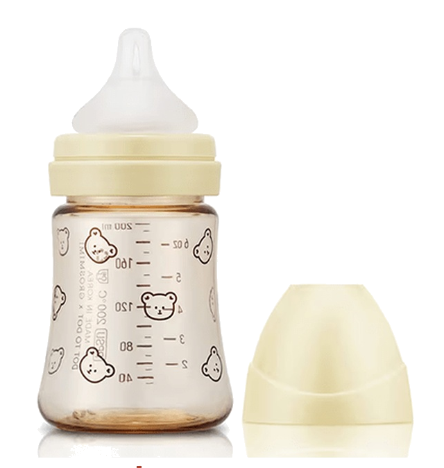
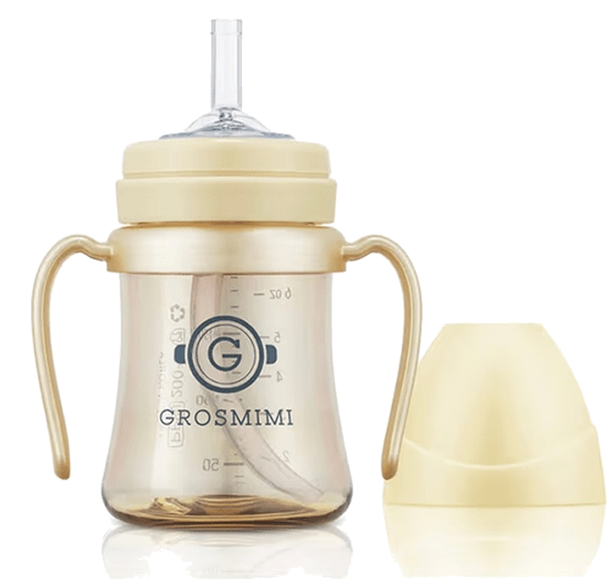

6〜12ヶ月：初めてのストロー練習。1歳前後には健診や保育園入園を前に「哺乳瓶卒業」のプレッシャーが強まる。
硬いストローは噛むだけで、吸えずにぷいっ。水分が足りているか不安になり、マグを何個も買っては拒否される「マグ難民」に。
初めてストローで吸えた一口と、その直後にママを見上げる顔。
ほとんどのストローは、赤ちゃんが飲み慣れた哺乳瓶の乳首よりずっと硬い。グロミミのStage 1・Stage 2ストローは乳首のようにやわらかいから、ストローマグが「次の一歩」として自然につながる。
ママたちが「うちもそう」と感じる場面から。ストローを嫌がる赤ちゃん、またはストローの先を指でつまむ手元。
「なぜ」をひとこと（専門家の知見を引用してもOK）。そして3つの飲み口をカメラの前で並べて、つまんで比べて見せる。
赤ちゃんが実際にストローマグで飲む姿を見せる。
赤ちゃんがつまずくのは、お口が覚えている乳首よりストローが硬いとき。やわらかいStage 1・Stage 2の飲み口なら、哺乳瓶の「続き」として受け入れやすい。
一度に全部変えないこと。まずは慣れたやわらかさのままマグに慣れて、それからやわらかいStage 1ストローへ進む。
ストロー練習は6ヶ月頃から始められる（このマグも6ヶ月〜対象）。焦らなくて大丈夫 — コップ飲みの練習と並行して進めてOK。
やわらかいシリコンの飲み口は、歯ぐきにやさしい「次の一歩」。
※ そのまま引用しても、自分の言葉に直してもOK。断定的な医療効果の表現（「歯並びが良くなる」等）は避けてください。
やわらかさをクローズアップで見せる
カメラに向かって直接話す
赤ちゃんが実際にマグで飲む姿を見せる
@grosmimi_japan との共同投稿（コラボ投稿）に設定してください（「共同投稿者を招待」から）
@grosmimi_japan
グロミミ（GROSMIMI）、Stage 1・Stage 2 ストロー
※ 有償・無償を問わず共通です。